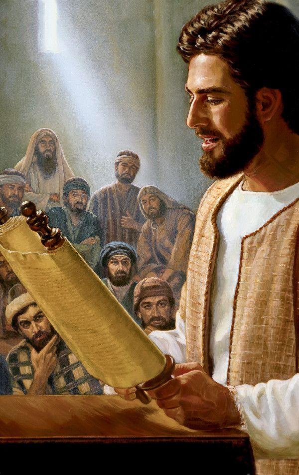

Viernes, 1 de agosto - Ciclo C
San Alfonso M. de Ligorio
memoria obligatoria
De la Feria
Del Propio
Evangelio
Mt 14, 1-12
MENSAJE DE HOY, SÁBADO 2 DE AGOSTO DE 2025. “Herodes quería matarlo, pero tenía miedo del pueblo, que consideraba a Juan un profeta”. En aquel tiempo, la fama de Jesús llegó a oídos del tetrarca Herodes, y él dijo a sus allegados: "Este es Juan el Bautista; ha resucitado de entre los muertos, y por eso se manifiestan en él poderes milagrosos". Herodes, en efecto, había hecho arrestar, encadenar y encarcelar a Juan, a causa de Herodías, la mujer de su hermano Felipe, porque Juan le decía: "No te es lícito tenerla". Herodes quería matarlo, pero tenía miedo del pueblo, que consideraba a Juan un profeta. El día en que Herodes festejaba su cumpleaños, la hija de Herodías bailó en público, y le agradó tanto a Herodes que prometió bajo juramento darle lo que pidiera. Instigada por su madre, ella dijo: "Tráeme aquí sobre una bandeja la cabeza de Juan el Bautista". El rey se entristeció, pero a causa de su juramento y por los convidados, ordenó que se la dieran y mandó decapitar a Juan en la cárcel. Su cabeza fue llevada sobre una bandeja y entregada a la joven, y esta la presentó a su madre. Los discípulos de Juan recogieron el cadáver, lo sepultaron y después fueron a informar a Jesús.
Palabra del Señor
